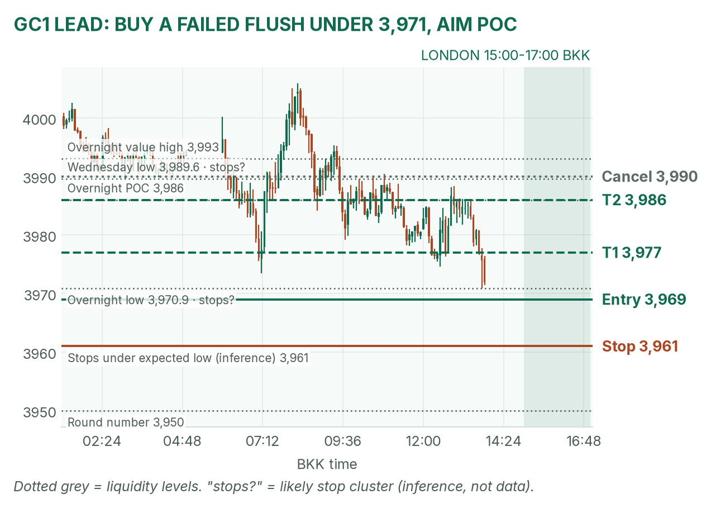
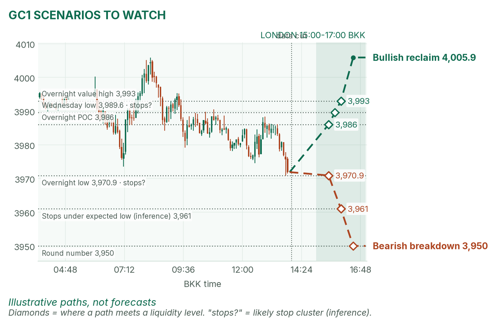
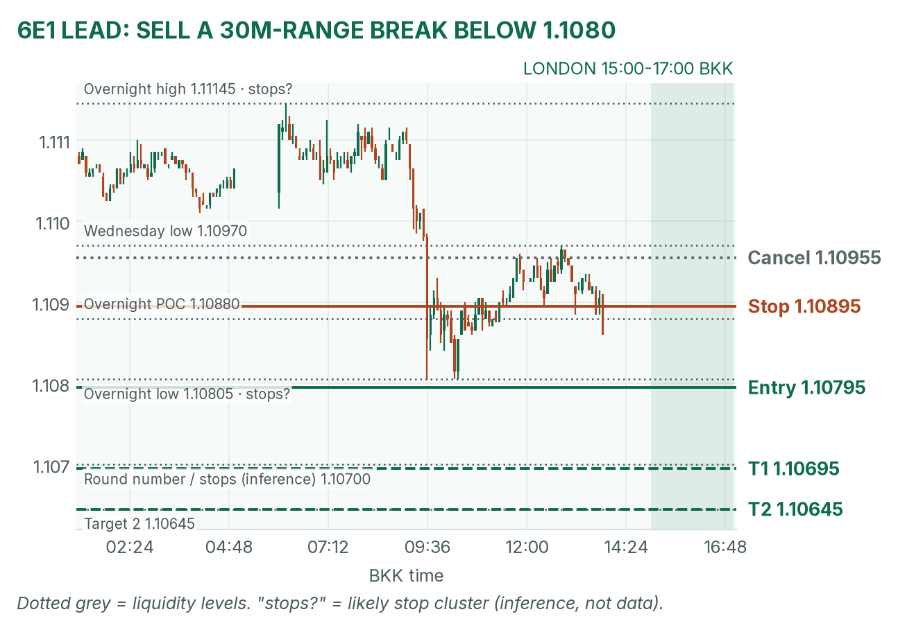
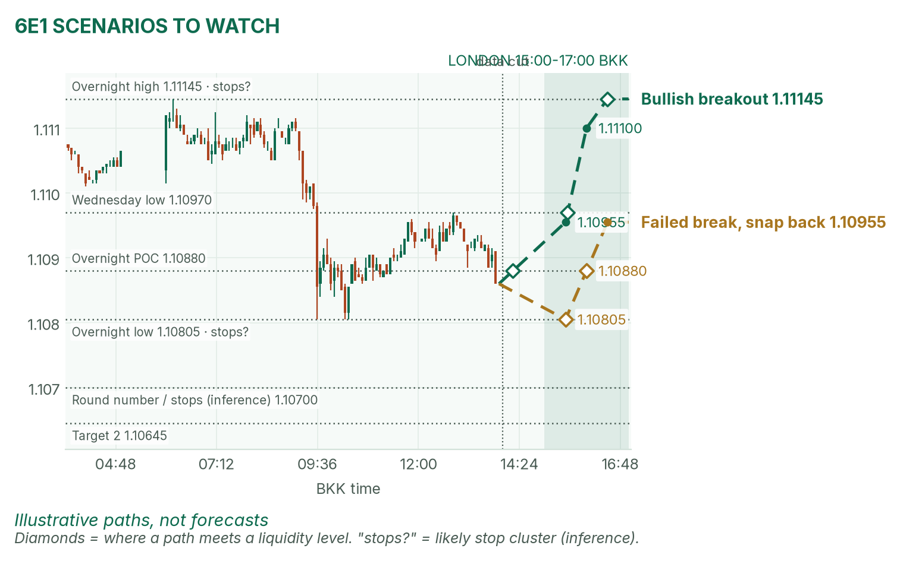

Gold is pressing its overnight low under 4,000; the euro sits just above its low as the dollar hits a 19-month high.
Window 15:00–17:00 BKK (UK on GMT). Data cut 13:55 BKK: GC 3,971.9, 6E 1.10860 (Dec contracts, last completed 5-minute bar). Backup data again: TopstepX refused login, so levels come from Yahoo Finance futures bars (about 10 minutes delayed). Levels only, flat by 17:00. Ideas, not advice. April's pre-London brief (~12:55 BKK) was read.
Summary
GC: buy only a failed flush under 3,970.9, entry 3,967–3,971, stop 3,961, targets 3,977 and 3,986. About 33% once filled.
6E: sell a break below 1.10795, stop 1.10895, targets 1.10695 and 1.10645. About 35%.
No scheduled release inside the window, but Nvidia board headlines can hit at any time.
The market story
Reports that Nvidia's board may remove CEO Jensen Huang knocked Nasdaq futures down about 1.1%. Meanwhile the dollar index touched 103.02, its highest since April 2025, because traders now put about 88% odds on a December Fed hike (April's brief, CME FedWatch).
A stronger dollar and higher expected rates both lean on gold, which pays no interest, so holding it has a bigger opportunity cost. Gold lost 4,000 and is sitting on its overnight low. The euro is the other side of the dollar's strength and is already below Wednesday's low. My read: the euro has the cleaner trend; gold is a fade only if sellers fail.
News (BKK)
Time
Release
Forecast
Prior
Read
14:00
UK Q3 GDP, first estimate
+0.7% q/q
not verified
Before the window; result not verified. Hot lifts the pound more than the euro; cold feeds the dollar.
Any time
Nvidia board decision
none
n/a
A CEO exit hits NQ first, then can spill over. On a headline spike, stand aside 5 minutes.
20:30
US jobless claims, bonds reopen
n/a
n/a
After the window.
Source: April's brief (FXStreet, StockWireX for the GDP forecast).
Levels to watch
Level
GC
6E
Wednesday high / low
4,074.7 / 3,989.6
1.11855 / 1.10970
Overnight high (since 06:00)
4,005.9
1.11145
Overnight value area (where about 70% of trading happened)
3,978–3,993
1.10870–1.11100
Overnight POC (busiest price)
3,986
1.10880
Overnight low
3,970.9
1.10805
Typical London range (last 3)
about 16 points (median)
about 25 pips
Gold (GC1)
Bias: bearish on the dollar, but stretched. The London gold rule: mark the 15:00–15:30 range and fade its edges back to the POC. My volatility model expects roughly 3,964 to 3,980.
The trade: mean-reversion buy
Entry
3,967–3,971 (plan 3,969), after 15:30, only on a drop below the range and the 3,970.9 overnight low that closes back above it on the 5-minute chart
Stop
3,961, below the expected session low and the sell stops likely parked there (my inference)
Targets
1R partial 3,977 · full target 3,986 (2.1R), the POC
Cancel
Gold trades above 3,990 before any flush, or no fill by 16:30
Probability
~33%, an estimate. Basis: in 42 sessions (Aug–Oct) GC London ranges mostly failed and fading to the POC worked best (not statistically significant); trading against the dollar trend lowers it.
Why: a quick run under an obvious low that reverses is a liquidity grab. If gold just keeps sliding with no reclaim, there's no trade; don't catch the knife. April partly agrees: she has gold inside 3,973.5–4,005.9 but says it has "a dollar problem".

GC 5-minute bars into the 13:55 cut. The buy zone sits just under the overnight low, where sell stops likely rest (my inference).

Illustrative paths, not forecasts.
Scenarios to watch
Bullish reclaim: a 15m close back above the 3,986 POC. Aims for 3,993, then the 4,005.9 overnight high.
Bearish breakdown: a 15m close below 3,961. Aims for the 3,950 round number.
Euro (6E1)
Bias: bearish. The dollar is the strongest thing on the board and the euro is already below Wednesday's 1.10970 low. The 6E London rule is to trade breakouts of the 15:00–15:30 range. A pip is 0.0001.
The trade: bearish range breakout
Entry
Sell stop 1.10795 after 15:30, just below the 1.10805 overnight low (if the 30m range low sits above it)
Stop
1.10895, back above the POC
Targets
1R partial 1.10695 · full target 1.10645 (1.5R), past the 1.1070 round number
Cancel
A trade above 1.10955 before the fill, or no break by 16:30
Probability
~35%, an estimate. Basis: 6E London range breakouts averaged +0.31R over 26 sessions; the target sits past the model's 1.1073 expected low, so I shade it down.
Why: trend, the dollar and the range rule line up. Yesterday's win with this setup proves nothing about today. April agrees: the dollar "leans on both gold and the euro".

6E 5-minute bars into the 13:55 cut. The entry sits under the overnight low; sell stops under 1.1070 are my inference.

Illustrative paths, not forecasts.
Scenarios to watch
Bullish breakout: a 5m close above 1.10955 (last-hour high). Aims for 1.1110, then 1.11145.
Mean reversion: a dip under 1.10805 that snaps back inside. Aims for the 1.10880 POC, then 1.10955.
NQ (not traded): about 28,164 at the cut, just above its 28,131.75 overnight low on the Nvidia news.
Before you click
ORB bases. GC London: 15:00–15:30 range, fade to POC. GC NY: 20:20 COMEX open until a 2-minute candle's volume drops below half the first two's average, fade to POC. 6E London: 15:00–15:30 range, trade breakouts. NQ NY: 21:30–21:35 range, trade breakouts.
Checklist. Room to max loss? Daily rules OK? No release within 30 minutes? With the bias? At a marked level? Setup tagged? Entry, stop, 1R partial, target set? Calm, not chasing?
Reset (60 seconds). Hands off the mouse. Breathe in 4, hold 4, out 6, five times. Name the feeling in one word. Say the plan aloud. "Eager" or "frustrated"? Wait 5 minutes.
Yahoo Finance Dec futures 5-minute bars (backup for TopstepX). Profiles from 5-minute bars; overnight starts 06:00 BKK. DXY, Fed odds and calendar: April's brief.